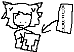

Well...
Heya!
So, uh...
No progress.
..
What?
...... Yeah, so...
I just... don't really want to work on Cold Front right now.
At least, not for a while.
And honestly, I don't think there's anything particularly wrong with that. I've been working on quite a few projects recently, and I think I've reached a point where I just want to step back for a bit.
It's not that I hate the project, or that I've suddenly decided it's a bad idea.
I'm just... not interested in working on it at the moment.
And I'd rather be honest about that, than keep pretending development is going somewhere when it really isn't.
Real Life Exists, Apparently.
Besides, I have a personal life!
Crazy, I know.
But seriously, I've got other things I need to focus on right now.
For starters, my grades are like...
Bad.

And I really need to start putting more effort into school, getting things organized, and generally getting my footing again.
Game development is something I genuinely love doing, but it also takes time. A LOT of time.
Sometimes it's easy to get caught up in working on a project.
But eventually, you have to remember that there's more to life than whatever you're making in your game engine.
And I think I've been neglecting some of those other things.
So, for now, I'd like to actually give them some attention.
So... Is Cold Front Cancelled?
No!
At least, that's not what I'm saying.
I still like the idea behind Cold Front, and I still want to make it someday.
I just don't want to force myself to work on it when I'm not particularly interested.
I don't think that would be good for the project, and it certainly wouldn't make development very enjoyable.
There are still plenty of things I'd like to do with it. The village, the dungeons, the music, the story...
I haven't forgotten about all of that.
I'm just putting it aside for a little while.
How long?
I genuinely don't know.
Maybe a few days, weeks, months, Maybe longer.
I'm not going to set a specific return date because I don't want to make another promise that I might not be able to keep.
When I feel ready to work on it again, I'll work on it again.
Simple as that.
What's Next?
Honestly?
I don't really know!
I wouldn't expect any major game development updates for a little while.
I think I just need some time to focus on myself, get school sorted out, and figure out what I actually want to do next.
And that's okay.
Not everything needs to be productive all the time.
That's About It!
So, yeah.
No Cold Front progress.
No new screenshots.
I think that means theres no demo next year.
Just me taking a step back for a bit.
I hope to get back into things eventually, but until then, I'll be around.
Take care, see ya!